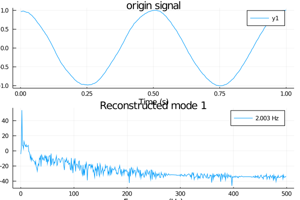
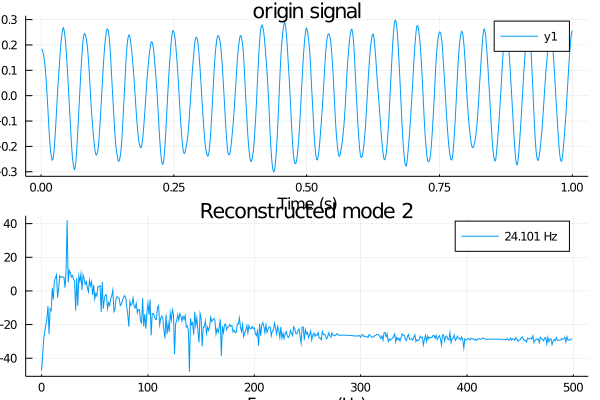
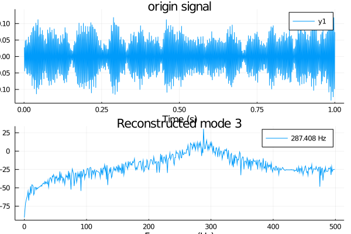

Examples
julia> using VMD,Random,Plots
julia> T = 1000;
julia> t = (1:T)/T;
julia> sample_frequency = 1000;
julia> # center frequencies of components
f_1 = 2;
julia> f_2 = 24;
julia> f_3 = 288;
julia> # modes
v_1 = @. cos(2*pi*f_1*t);
julia> v_2 = @. 1/4*(cos(2*pi*f_2*t));
julia> v_3 = @. 1/16*(cos(2*pi*f_3*t));
julia> # composite signal, including noise
f = v_1 + v_2 + v_3 + 0.1*randn(length(v_1));
julia> # some sample parameters for VMD
alpha = 2000; # moderate bandwidth constraint
julia> tau = 0; # noise-tolerance (no strict fidelity enforcement)
julia> K = 4; # 3 modes
julia> DC = false; # no DC part imposed
julia> init = 1; # initialize omegas uniformly
julia> tol = 1e-7;
julia> v = vmd(f ; alpha = alpha,tau = tau,K = K,DC = false,init = 1,tol = tol,sample_frequency = sample_frequency)
--iteration times 47 -- error 5.830448027345417e-8
julia> # the first mode frequency
print("1st mode frequency $(n_mode(v,1))")
1st mode frequency 2.0031548383156643
julia> p0 = VMD.plot(v,k=0)
Plot{Plots.GRBackend() n=2}
julia> savefig(p0,"0.png")
julia> p1 = VMD.plot(v,k=1)
Plot{Plots.GRBackend() n=2}
julia> savefig(p1,"1.png")
julia> p2 = VMD.plot(v,k=2)
Plot{Plots.GRBackend() n=2}
julia> savefig(p2,"2.png")
julia> p3 = VMD.plot(v,k=3)
Plot{Plots.GRBackend() n=2}
julia> savefig(p3,"3.png")plot the original signal and spectrum

plot the 1st decomposed signal and spectrum

plot the 2st signal and spectrum

plot the 3st decomposed signal and spectrum
